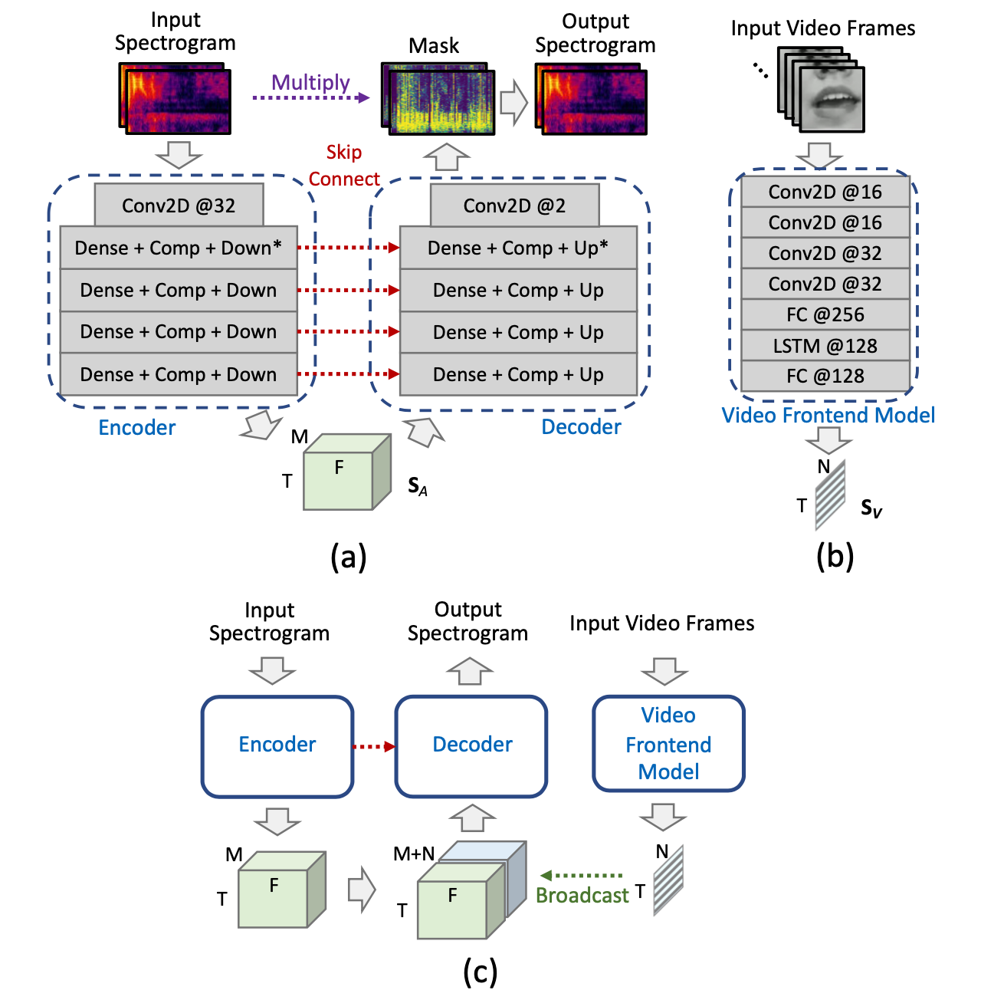

Audiovisual Singing Voice Separation

|
This project is in collaboration with the
ByteDance AI Lab.
This project is partially supported by the National Science Foundation under grant No. 1741472, titled "BIGDATA: F: Audio-Visual Scene Understanding". |
Publications
Bochen Li, Yuxuan Wang, and Zhiyao Duan, Audiovisual Singing Voice Separation, Transactions of the International Society for Music Information Retrieval, 4(1), ppp.195–209, 2021. DOI: http://doi.org/10.5334/tismir.108. http://doi.org/10.5334/tismir.108 <pdf>
Background / Motivation
- Separating a song into vocal and accompaniment components is an active research topic.
- We propose to apply the visual information corresponding to the singers’ vocal activities to improve the quality of the separated vocal signals.
- We propose the "solo voice separation" concept, where backing vocal components (if exist) are regarded as accompaniment tracks.
Method

- (a) The audio subnetwork.
- (b) The video subnetwork.
- (c) The audiovisual fusion.
Results
Demo 1
Vocal separation results from the URSing dataset, which was recorded in sound booth with different scenarios as the training/validation data.
| Original mixture |
Groud-truth solo vocal |
Result from audio-based method |
Result from proposed audiovisual method |
- Separated vocal using audio-based method still have some backing vocals left.
- The proposed audio-visual method only separates the vocal components related to the solo singer by attending to the mouth movements.
Demo 2
Evaluations on a capella songs downloaded from YouTube.
| Original mixture |
Separated vocal from audio-based method |
Separated solo vocal from proposed method |
Demo 3
Evaluations on randomly mixed samples (same scenario as the training/validation data).
Original mixture |
Groud-truth solo vocal |
Result from audio-based method |
Result from proposed audiovisual method |
Last Update: Jan 2022